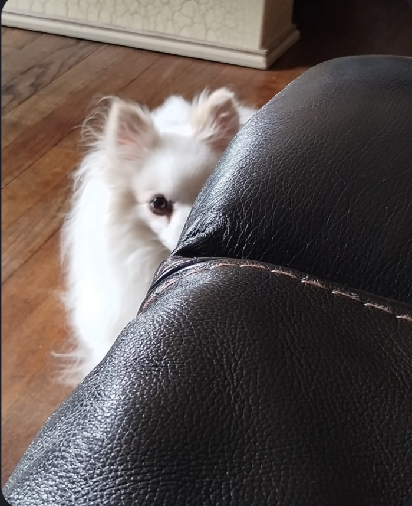
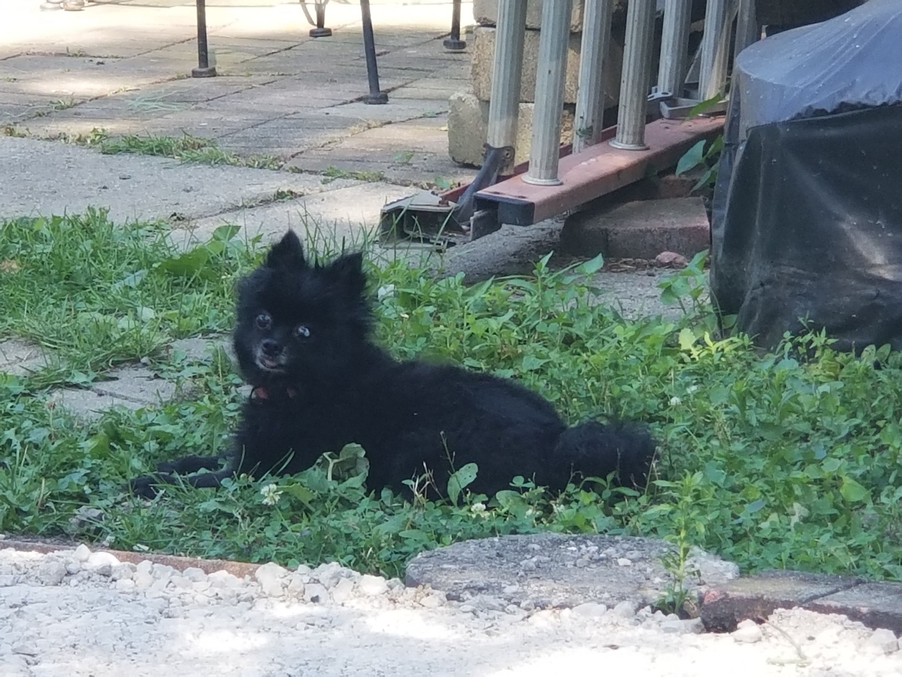
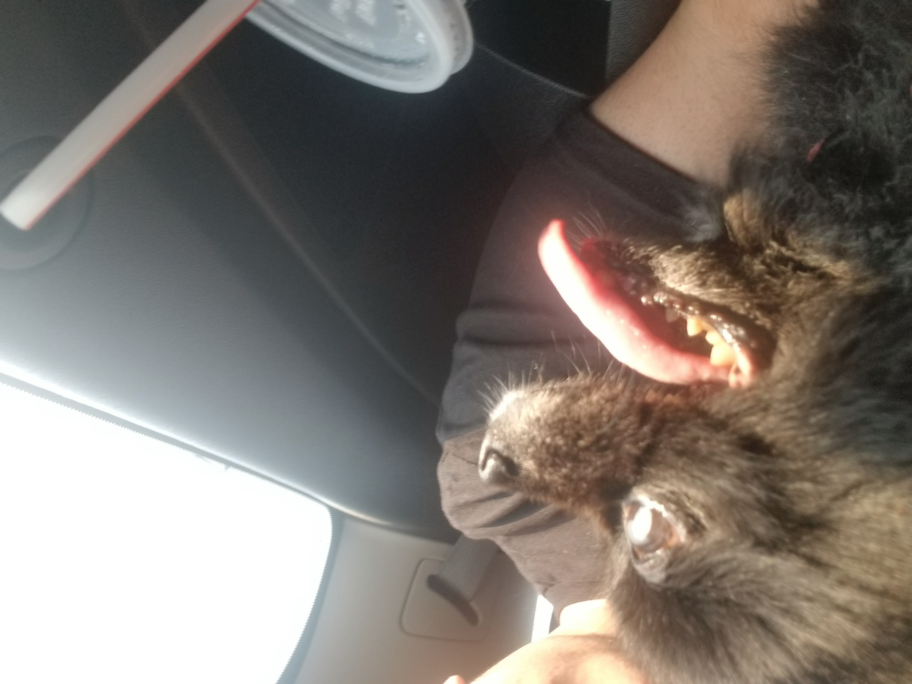

Sadly, she passed away from the old age of 17 human years in March of 2025, but her existence provided me with a very happy childhood!

She was given to us by our brother around 2017 when she was around 2 years old. Unfortunatly, she was born somewhat blind, with her eyesight getting worse as he grew up. Luckily, she is still with us and is a very erngetic and happy dog!
